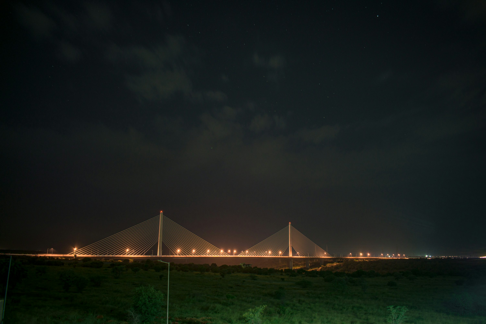

Akshat Sharma
First Year, IIIT Hyderabad
Kota, Rajasthan
About Me
I am Akshat Sharma, currently pursuing a dual degree in B.Tech (Computer Science) and MS in Computing and Human Sciences at IIIT Hyderabad. Passionate about technology, design, and interdisciplinary learning. I am constantly exploring ways to integrate technology with human-centered research.
Education
- IIIT Hyderabad (2024-Present): B.Tech in Computer Science & MS in Computing and Human Sciences
- Allen Career Institute, Kota (2022-2024): JEE Preparation
- St. Paul’s Sr. Sec. School, Kota (Up to 10th Grade): CBSE Curriculum
Skills
Programming Languages: C, C++, Python, Bash
Databases: MySQL, NoSQL
Frameworks: FastAPI
Currently Learning: Data Structures and Algorithms
Personal Interests
I enjoy playing badminton, basketball, and chess. I also have a keen interest in design and love creating clean, intuitive user interfaces.
CV
Download My CVLocal Gallery

<3